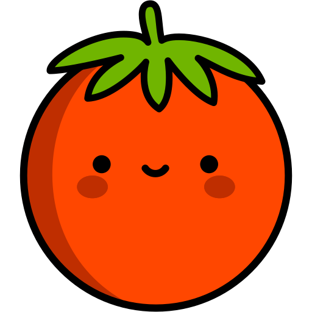
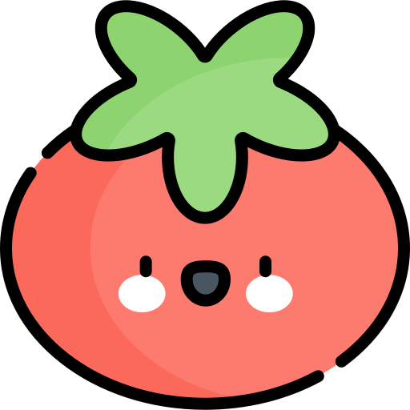
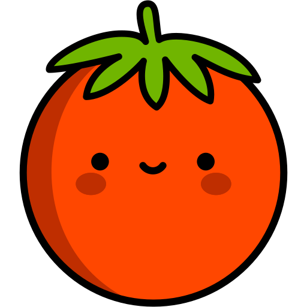
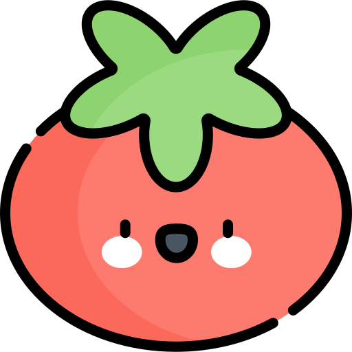

Introduce aquí todas las tareas que quieras realizar durante el día.
 Explicaciòn:
Explicaciòn:El Método Pomodoro es una técnica de gestión del tiempo desarrollada por Francesco Cirillo a finales de los años 80, diseñada para mejorar la productividad y la concentración. Su principio básico se basa en dividir el trabajo en intervalos cortos, llamados "Pomodoros", que generalmente duran 25 minutos, seguidos de un breve descanso de 5 minutos.
 



Cada Pomodoro es un espacio de trabajo durante el cual el individuo se dedica de lleno a una tarea específica, sin distracciones. El objetivo es permanecer concentrado en la tarea hasta que llegue el momento del Pomodoro y luego tomar un breve descanso para recargar las baterías. Después de cuatro Pomodoros, se toma un descanso más largo, generalmente de 15 a 30 minutos, lo que permite recargar las pilas antes de iniciar nuevos ciclos.